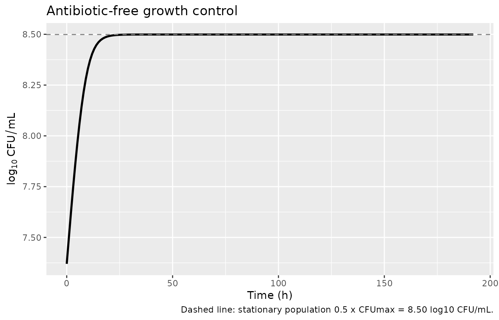
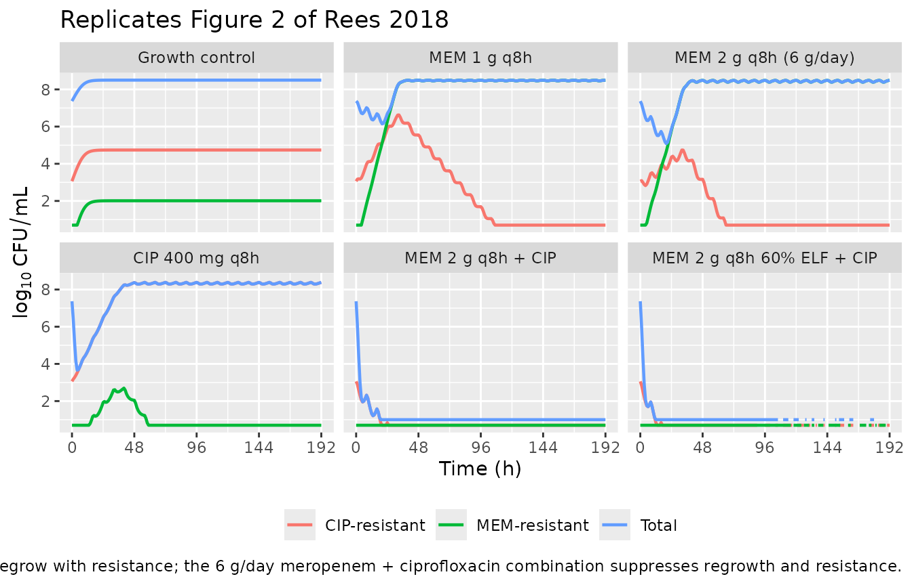

Meropenem + ciprofloxacin (Rees 2018)
Source:vignettes/articles/Rees_2018_meropenem_ciprofloxacin.Rmd
Rees_2018_meropenem_ciprofloxacin.RmdModel and source
- Citation: Rees VE, Yadav R, Rogers KE, Bulitta JB, Wirth V, Oliver A, Boyce JD, Peleg AY, Nation RL, Landersdorfer CB. Meropenem combined with ciprofloxacin combats hypermutable Pseudomonas aeruginosa from respiratory infections of cystic fibrosis patients. Antimicrob Agents Chemother. 2018 Oct 24;62(11):e01150-18. doi:10.1128/AAC.01150-18. Model differential equations (Eqs 1-4) and static-time-kill parameters (Table S1) are in the supplemental material.
- Description: In vitro (hollow-fiber infection model). Mechanism-based PK/PD (life-cycle growth) model of bacterial killing and resistance for meropenem plus ciprofloxacin against hypermutable Pseudomonas aeruginosa CW44, with three pre-existing subpopulations and subpopulation plus mechanistic synergy
- Article: https://doi.org/10.1128/AAC.01150-18
- Supplement (model equations Eqs 1-4, Table S1): https://doi.org/10.1128/AAC.01150-18
This is not a population PK model. It is a
mechanism-based PK/PD model (MBM) of bacterial killing and resistance,
fit with S-ADAPT to total and resistant viable counts for the
double-susceptible hypermutable Pseudomonas aeruginosa isolate
CW44 in a dynamic hollow-fiber infection model (HFIM). The antibiotic
exposures (meropenem and ciprofloxacin epithelial-lining-fluid
concentrations) are model inputs that were simulated to reflect
cystic-fibrosis patient pharmacokinetics; here they are reproduced as
two concentration states (cmem, ccip) that the
user doses and that decline with the published half-lives. Because there
is no absorption-distribution-elimination profile of a drug to integrate
for an NCA, NCA / PKNCA is not an appropriate validation; the checks
below are the mechanistic equivalents (carrying-capacity hold, synergy
quantification, and replication of the published kill / regrowth
behaviour).
Population (biological context)
The model describes P. aeruginosa CW44, a hypermutable clinical isolate from a cystic fibrosis patient with chronic respiratory infection, susceptible to both meropenem (Etest MIC 0.5 mg/L) and ciprofloxacin (MIC 0.19 mg/L) (Rees 2018 Table 1). It was grown in cation-adjusted Mueller-Hinton broth at an initial inoculum of ~10^7.4 CFU/mL and treated over 8 days in the HFIM with meropenem (1 or 2 g q8h as 3-h infusions, or 3 g/day as a continuous infusion) and ciprofloxacin (400 mg q8h as 1-h infusions), alone and combined, with simulated ELF concentration-time profiles (Rees 2018 Table 3, Methods). Four other strains (PAO1, PAO-delta-mutS, CW8, CW35) were studied only in static time-kill assays and are not described by this HFIM model.
The same information is available programmatically via
readModelDb("Rees_2018_meropenem_ciprofloxacin")$population.
Source trace
Per-parameter origins are recorded as in-file comments next to each
ini() entry in
inst/modeldb/specificDrugs/Rees_2018_meropenem_ciprofloxacin.R.
All parameter values are the HFIM population-mean estimates from Rees
2018 Table 2; the static-time-kill (SCTK) counterparts are in supplement
Table S1. The model structure is from supplement Equations 1-4 and
Figure 3.
| Equation / parameter | Value | Source location |
|---|---|---|
log10cfu0 (initial inoculum) |
7.37 | Table 2 |
log10cfumax (max population size) |
8.80 | Table 2 |
lk21 (replication rate, fixed) |
50.0 /h | Table 2 (fixed) |
mgt_ss, mgt_ri, mgt_ir (mean
generation times) |
181, 86.3, 121 min | Table 2 (the “k12” rows; k12 = 60/MGT) |
log10mf_mem, log10mf_cip (mutation
frequencies) |
-7.70, -4.31 | Table 2 |
kmax_mem, kmax_cip
|
0.975, 5.28 /h | Table 2 |
kc50_{ss,ri,ir}_mem |
2.08, 24.5, 5.48 mg/L | Table 2 |
kc50_{ss,ri,ir}_cip |
1.67, 14.5, 45.8 mg/L | Table 2 |
hill_mem |
1.60 | Table 2 |
imax_syn (fixed), ic50_syn
|
1, 0.914 mg/L | Table 2 |
addSd (residual SD, log10 scale) |
0.370 | Table 2 (SDCFU) |
thalf_mem, thalf_cip (fixed inputs) |
0.8, 2.9 h | Methods (clinical PK refs 48, 49, 56) |
| Life-cycle growth ODEs (2 states/subpop) | n/a | Supplement Eqs 2-3 |
| Killing term (Hill MEM + Emax CIP) | n/a | Supplement Eq 2 |
Mechanistic synergy
syn = 1 - Imax*Ccip/(Ccip+IC50syn)
|
n/a | Supplement Eq 4 |
Total viable count CFUall = sum of 6 states
|
n/a | Supplement Eq 1 |
Units (dimensional analysis)
| Symbol | Meaning | Units |
|---|---|---|
bact_susceptible_susceptible1, bact_susceptible_susceptible2, bact_resistant_intermediate1, bact_resistant_intermediate2, bact_intermediate_resistant1, bact_intermediate_resistant2 |
bacterial states | CFU/mL |
cmem, ccip |
antibiotic concentrations | mg/L |
lk21, k12*, kel_*, kill_*, kmax_* |
rate constants | 1/h |
kc50_*, ic50_syn |
half-effect concentrations | mg/L |
hill_mem, plat, syn, imax_syn |
dimensionless | – |
cfumax, cfu0 |
population scale / inoculum | CFU/mL |
Every growth/kill ODE term has the form (1/h) x (CFU/mL) =
(CFU/mL)/h, matching d/dt(state); the drug ODEs have (1/h)
x (mg/L) = (mg/L)/h. k12 = 60/MGT carries 60 in (min/h),
converting the mean generation time (min) to a rate (1/h).
mod <- rxode2::rxode(readModelDb("Rees_2018_meropenem_ciprofloxacin"))
mod$state
#> [1] "bact_susceptible_susceptible1" "bact_susceptible_susceptible2"
#> [3] "bact_resistant_intermediate1" "bact_resistant_intermediate2"
#> [5] "bact_intermediate_resistant1" "bact_intermediate_resistant2"
#> [7] "cmem" "ccip"Parameter table (paper vs. file)
params <- mod$theta
knitr::kable(
data.frame(parameter = names(params), file_value = unname(params)),
caption = "Fixed/typical parameter values as loaded from the model file (Rees 2018 Table 2)."
)| parameter | file_value |
|---|---|
| log10cfu0 | 7.370000 |
| log10cfumax | 8.800000 |
| lk21 | 3.912023 |
| mgt_ss | 181.000000 |
| mgt_ri | 86.300000 |
| mgt_ir | 121.000000 |
| log10mf_mem | -7.700000 |
| log10mf_cip | -4.310000 |
| kmax_mem | 0.975000 |
| kc50_ss_mem | 2.080000 |
| kc50_ri_mem | 24.500000 |
| kc50_ir_mem | 5.480000 |
| hill_mem | 1.600000 |
| kmax_cip | 5.280000 |
| kc50_ss_cip | 1.670000 |
| kc50_ri_cip | 14.500000 |
| kc50_ir_cip | 45.800000 |
| imax_syn | 1.000000 |
| ic50_syn | 0.914000 |
| addSd | 0.370000 |
| thalf_mem | 0.800000 |
| thalf_cip | 2.900000 |
Carrying-capacity (growth control) check
With no antibiotic, the population grows from the inoculum (10^7.37)
toward a stationary plateau. A notable structural property of this
two-state life-cycle growth model: at steady state the plateau factor
plat = 1 - CFUall/CFUmax settles at 0.5
(each surviving division replaces one cell), so the realized stationary
population is 0.5 * CFUmax, i.e. log10(0.5 * 10^8.80) =
8.50 – not 8.80. This matches the regrowth plateau of “>= 8.5 log10
CFU/mL” reported by Rees 2018, and is the correct behaviour of the
published equations rather than a transcription error.
ev_gc <- et(seq(0, 192, by = 1))
gc <- rxode2::rxSolve(mod, ev_gc, returnType = "data.frame", maxsteps = 1e5)
cat(sprintf("Inoculum log10CFU(0) = %.3f (Table 2 Log10CFU0 = 7.37)\n", gc$Cc[1]))
#> Inoculum log10CFU(0) = 7.370 (Table 2 Log10CFU0 = 7.37)
cat(sprintf("Plateau log10CFU(192)= %.3f (expected 0.5*CFUmax = %.3f)\n",
tail(gc$Cc, 1), log10(0.5) + 8.80))
#> Plateau log10CFU(192)= 8.499 (expected 0.5*CFUmax = 8.499)
ggplot(gc, aes(time, Cc)) +
geom_line(linewidth = 1) +
geom_hline(yintercept = log10(0.5) + 8.80, linetype = 2, colour = "grey50") +
labs(x = "Time (h)", y = expression(log[10]~CFU/mL),
title = "Antibiotic-free growth control",
caption = "Dashed line: stationary population 0.5 x CFUmax = 8.50 log10 CFU/mL.")
Mechanistic synergy check
Ciprofloxacin lowers the effective meropenem KC50 through the synergy
factor syn = 1 - Imax_SYN * Ccip / (Ccip + IC50_SYN); the
meropenem killing term uses (syn * KC50,MEM)^Hill in its
denominator, so the effective KC50,MEM is syn * KC50,MEM
and the fold-decrease in KC50,MEM is 1 / syn. Rees 2018
report an “~4.3-fold decrease in KC50,MEM in the presence of 3 mg/L
ciprofloxacin”; the model reproduces this exactly.
imax_syn <- 1; ic50_syn <- 0.914
syn <- function(ccip) 1 - imax_syn * ccip / (ccip + ic50_syn)
data.frame(
Ccip_mgL = c(0, ic50_syn, 3),
syn = syn(c(0, ic50_syn, 3)),
KC50_MEM_fold_decrease = 1 / syn(c(0, ic50_syn, 3))
) |>
knitr::kable(digits = 3,
caption = "Mechanistic synergy: fold-decrease in meropenem KC50 (1/syn). At 3 mg/L ciprofloxacin the model gives ~4.3-fold, matching Rees 2018.")| Ccip_mgL | syn | KC50_MEM_fold_decrease |
|---|---|---|
| 0.000 | 1.000 | 1.000 |
| 0.914 | 0.500 | 2.000 |
| 3.000 | 0.234 | 4.282 |
Replicate Figure 2 (HFIM kill / regrowth)
Figure 2 of Rees 2018 shows total and resistant population time courses over 8 days for meropenem and ciprofloxacin in mono- and combination therapy. We reproduce the qualitative behaviour: monotherapies achieve initial killing followed by regrowth of the corresponding resistant subpopulation, whereas the 6 g/day meropenem (2 g q8h) plus ciprofloxacin combination produces sustained killing and resistance suppression.
Each regimen is dosed with a loading dose plus q8h infusions whose rates were chosen to reproduce the Table 3 epithelial-lining-fluid Cmax/Cmin. Simulations are deterministic typical-value trajectories (the model has no between-subject random effects). Counts below the limit of counting are floored at the published values (1.0 log10 CFU/mL total, 0.7 log10 CFU/mL resistant), as in the paper.
kel_mem <- log(2) / 0.8
kel_cip <- log(2) / 2.9
# Steady-state infusion rate (into a unit-volume concentration state) that
# reaches target Cmax for a tau-h interval with a T-h infusion.
rate_for <- function(Cmax, kel, tau, Tinf) {
Cmax * kel * (1 - exp(-kel * tau)) / (1 - exp(-kel * Tinf))
}
# One regimen as a dosing data.frame; id_offset keeps subject IDs disjoint.
mem_inf <- function(Cmax, id) {
R <- rate_for(Cmax, kel_mem, 8, 3)
as.data.frame(et(id = id, amt = R * 3, rate = R, ii = 8, cmt = "cmem", until = 192))
}
cip_inf <- function(id) {
R <- rate_for(2.8, kel_cip, 8, 1)
bind_rows(
as.data.frame(et(id = id, amt = 0.53, cmt = "ccip", time = 0)), # loading
as.data.frame(et(id = id, amt = R * 1, rate = R, ii = 8, cmt = "ccip", until = 192))
)
}
regimens <- list(
"Growth control" = function(id) as.data.frame(et(id = id, amt = 0, cmt = "cmem", time = 0)),
"MEM 1 g q8h" = function(id) mem_inf(6, id),
"MEM 2 g q8h (6 g/day)" = function(id) mem_inf(12, id),
"CIP 400 mg q8h" = function(id) cip_inf(id),
"MEM 2 g q8h + CIP" = function(id) bind_rows(mem_inf(12, id), cip_inf(id)),
"MEM 2 g q8h 60% ELF + CIP" = function(id) bind_rows(mem_inf(24, id), cip_inf(id))
)
obs <- function(id) as.data.frame(et(id = id, time = seq(0, 192, by = 1)))
events <- bind_rows(lapply(seq_along(regimens), function(i) {
bind_rows(regimens[[i]](i), obs(i)) |>
mutate(regimen = names(regimens)[i])
}))
stopifnot(!anyDuplicated(unique(events[, c("id", "time", "evid")])))
sim <- rxode2::rxSolve(mod, events, keep = "regimen",
returnType = "data.frame", maxsteps = 1e5) |>
as.data.frame()
#> Warning: multi-subject simulation without without 'omega'
loc_total <- 1.0
loc_res <- 0.7
plot_df <- sim |>
transmute(
time, regimen,
Total = pmax(log10(CFUall), loc_total),
`MEM-resistant` = pmax(log10(CFUrmem), loc_res),
`CIP-resistant` = pmax(log10(CFUrcip), loc_res)
) |>
pivot_longer(c(Total, `MEM-resistant`, `CIP-resistant`),
names_to = "population", values_to = "log10CFU") |>
mutate(regimen = factor(regimen, levels = names(regimens)))
#> Warning: There were 3 warnings in `transmute()`.
#> The first warning was:
#> ℹ In argument: `Total = pmax(log10(CFUall), loc_total)`.
#> Caused by warning in `pmax()`:
#> ! NaNs produced
#> ℹ Run `dplyr::last_dplyr_warnings()` to see the 2 remaining warnings.
ggplot(plot_df, aes(time, log10CFU, colour = population)) +
geom_line(linewidth = 0.8) +
facet_wrap(~regimen) +
scale_x_continuous(breaks = seq(0, 192, by = 48)) +
labs(x = "Time (h)", y = expression(log[10]~CFU/mL), colour = NULL,
title = "Replicates Figure 2 of Rees 2018",
caption = paste("Monotherapies regrow with resistance; the 6 g/day meropenem +",
"ciprofloxacin combination suppresses regrowth and resistance.")) +
theme(legend.position = "bottom")
#> Warning: Removed 4 rows containing missing values or values outside the scale range
#> (`geom_line()`).
sim |>
group_by(regimen) |>
summarise(
nadir_total_log10 = round(min(log10(pmax(CFUall, 1e-3))), 2),
end_total_log10 = round(log10(pmax(tail(CFUall, 1), 1e-3)), 2),
end_MEMres_log10 = round(log10(pmax(tail(CFUrmem, 1), 1e-3)), 2),
end_CIPres_log10 = round(log10(pmax(tail(CFUrcip, 1), 1e-3)), 2),
.groups = "drop"
) |>
mutate(regimen = factor(regimen, levels = names(regimens))) |>
arrange(regimen) |>
knitr::kable(caption = "Simulated nadir and day-8 (191 h) populations by regimen. Monotherapies regrow to the ~8.5 log10 plateau with the matching resistant subpopulation; combinations drive the total below the limit of counting.")| regimen | nadir_total_log10 | end_total_log10 | end_MEMres_log10 | end_CIPres_log10 |
|---|---|---|---|---|
| Growth control | 7.37 | 8.50 | 2.01 | 4.74 |
| MEM 1 g q8h | 6.14 | 8.50 | 8.50 | -3.00 |
| MEM 2 g q8h (6 g/day) | 5.08 | 8.49 | 8.49 | -3.00 |
| CIP 400 mg q8h | 3.66 | 8.39 | -3.00 | 8.39 |
| MEM 2 g q8h + CIP | -3.00 | -3.00 | -3.00 | -3.00 |
| MEM 2 g q8h 60% ELF + CIP | -3.00 | -3.00 | -3.00 | -3.00 |
Assumptions and deviations
-
Model class / species. This is an in-vitro
mechanism-based PK/PD model, not a popPK model;
population$speciesrecords the P. aeruginosa CW44 isolate. No PKNCA validation is performed (there is no drug NCA to compute); the mechanistic checks above replace it, per the endogenous/mechanistic validation strategy. -
File naming. The dispatch metadata listed the drug
as “Antimicrobial Agents and Chemo”, which is the journal name
(Antimicrobial Agents and Chemotherapy), not a drug. The paper
unambiguously models meropenem plus ciprofloxacin, so the model file and
this vignette use
Rees_2018_meropenem_ciprofloxacin. - HFIM final model. Parameters are the HFIM estimates (Rees 2018 Table 2). The static-concentration time-kill (SCTK) MBM (supplement Table S1) shares the same structure but different estimates and was the precursor that “was adapted for the HFIM data”; it is not separately packaged.
-
Mean generation time. Table 2 labels the growth
rows “k12 (min-1)” but the reported values (181, 86.3, 121) are the mean
generation times in minutes; the supplement defines the rate constant as
k12 = 60/MGT(1/h). The file stores the MGTs and derivesk12inmodel(). -
Synergy term placement. The supplement equation
renders the meropenem killing denominator ambiguously; the effective
KC50,MEM is taken as
(syn * KC50,MEM)^Hillbecause that reproduces the paper’s stated ~4.3-fold KC50,MEM decrease at 3 mg/L ciprofloxacin (1/syn = 4.28), whereassyn * KC50,MEM^Hillwould give only ~2.5-fold. -
Stationary population is 0.5 x CFUmax. A structural
property of the published two-state model (steady state at
plat = 0.5), consistent with the observed plateau of “>= 8.5 log10 CFU/mL”; not adjusted to reach 8.80. -
Antibiotic disposition. The antibiotic half-lives
(0.8 h meropenem, 2.9 h ciprofloxacin) are fixed inputs taken from the
clinical PK literature cited in Methods, not MBM estimates; they
parameterize the
cmem/ccipelimination so the model is self-contained. ELF penetration (30%/60% meropenem, 85% ciprofloxacin) was already absorbed into the Table 3 target concentrations and is therefore reflected in the dosing rates chosen here, not in the model parameters. Infusion rates in the Figure 2 chunk were derived analytically to hit the Table 3 Cmax/Cmin and are not fitted to the bacterial data. - Initial state partitioning. The inoculum and the two pre-existing resistant subpopulations (seeded by the meropenem and ciprofloxacin mutation frequencies) are placed entirely in life-cycle state 1; the paper specifies the inoculum and mutation frequencies but not the state-1/state-2 split. The balanced-growth state-2 fraction is < 1% of the population, so this introduces only a brief start-up transient.
- Below limit of counting. Displayed counts are floored at the published limits of counting (1.0 log10 CFU/mL total, 0.7 log10 CFU/mL resistant), as in Rees 2018 Figures 1-2; the underlying states are not floored.
-
Solver.
maxsteps = 1e5is passed torxSolvebecause the rapid kill of the combination regimens makes the system briefly stiff. Steady-state (ss=1) dosing must not be used: it would reinitialize the bacterial states to their grown steady state and destroy the inoculum. -
Convention deviations
(
checkModelConventions()warnings, no errors). All are expected for an in-vitro mechanism-based model: (a) the bacterial-state compartments (bact_susceptible_susceptible1,bact_susceptible_susceptible2,bact_resistant_intermediate1,bact_resistant_intermediate2,bact_intermediate_resistant1,bact_intermediate_resistant2) and antibiotic- concentration states (cmem,ccip) are mechanism-specific; (b)lk21is a fixed mechanistic rate constant that is log-transformed for parameterisation consistency; (c) the single observationCccarries a non-PK output (log10 viable count, not a drug concentration); (d) the dosing/concentration units are bothmg/Lbecause the antibiotic input is a concentration in the in-vitro system.